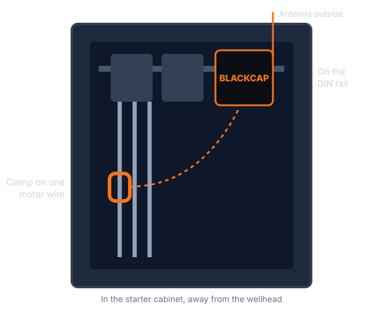
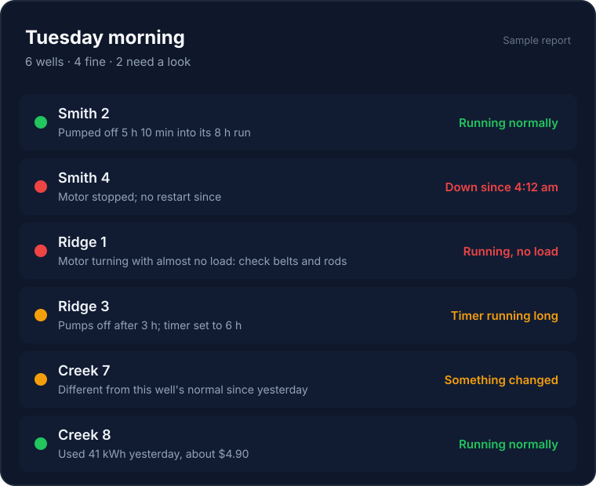

Running or down
An alert as soon as a well stops, and when it came back. No more finding it the next day.
Well monitoring for independent operators
Blackcap clips onto the motor wiring in your starter cabinet and watches every stroke. Each morning you get one list: which wells are fine, which pumped off, which went down, and what your timers are costing you.
How it works
One clamp around one motor wire, the unit on the DIN rail, the antenna outside. An electrician can do it, or you can, with the motor locked out.
Blackcap reads how hard your motor is working through every stroke, all day, and sends it over the cellular network. It learns what normal looks like for each well.
Before you leave the house: which wells are fine, which need a look, and why. The route you drive is the route that matters.

Blackcap goes in the motor starter cabinet, more than ten feet from the wellhead. No wellhead fittings, no load cell on the polished rod, nothing on the pumping unit to work loose.
Install takes about the time it takes to open the cabinet and close it again.
What you'll know
An alert as soon as a well stops, and when it came back. No more finding it the next day.
How far into each run your well pumps off, what the timer should be, and what the extra running is costing you.
What each well used yesterday and what it cost, so the expensive ones stand out.
When the motor is turning but the well isn't lifting: broken belts, parted rods. Flagged right away.
Each well learns its own normal. When a well starts behaving differently, it goes on your list before it becomes a repair bill.
Fluid pound, well decline trends and estimated barrels. We'll turn them on as real wells prove them.

One list, every morning
Most stops on a pumper's route find nothing wrong. Blackcap puts the wells that need you at the top and tells you what changed, so the drive goes where the problems are.
Shown: an example. Your list shows your wells.
of U.S. oil and gas wells produce 15 barrels of oil equivalent a day or less.
U.S. Energy Information Administration, 2024 dataof U.S. wells are low producers, typically run by small businesses.
National Stripper Well Associationwellhead work. Blackcap never touches the wellhead or the pumping unit.
Coming later
Later, Blackcap will be able to rest a pumped-off well for you and start it again when it's ready, through a listed relay in the starter cabinet. Your off switch and disconnect stay in charge, and if Blackcap ever loses power, your well runs exactly as it does today.
Pilot program
We're putting units on a small number of electric wells with operators who want to try it. You get the morning list. We get to prove it on real wells.
Blackcap is in pilot. What it detects is being proven on real wells now, and how well each detection holds up across many different wells is still being measured. We'll say so plainly as results come in.